1. Rasa Products
Der Rasa Stack wird in Rasa NLU und Rasa Core aufgeteilt. Diese sind so aufgebaut, dass sie unabhängig voneinander eingesetzt werden können. So besteht die Möglichkeit, nur einen Teil der Architektur auf Rasa aufzubauen und zusätzlich weitere Services mit einzubinden.
-
Rasa Core
Rasa Core ist verantwortlich für den Conversation Flow, Context-Handling, Bot-Responses und Session Management. Dabei kann auf der Rasa NLU oder anderen Services aufgebaut werden, die die Intent Recognition und Entity Extraction übernehmen und die Ergebnisse dem Rasa Core zur Verfügung stellen.
RASA Core bezieht sich dabei auf die Hauptkomponente, die die Nachrichten erhält und darauf antwortet.
Der Rasa Core hält für jede Session, also für jeden User, einen Tracker. Dieser enthält den momentanen Zustand der Konversationen, der jeweiligen User. Bekommt der Bot nun eine Nachricht, wird zuerst der Interpreter durchlaufen, welcher den Originaltext als Eingabe bekommt, und die Eingabe, den Intent und die extrahierten Entities zurückgibt. Zusammen mit dem aktuellen Zustand des Trackers entscheidet die Policy Komponente nun, welche Action, also Antwort des Bots, als nächstes ausgeführt werden soll. Diese Entscheidung wird nicht durch einfache Regeln getroffen, sondern genauso wie Intents oder Entities, auf der Grundlage von einem, mit Machine Learning, trainierten Model.
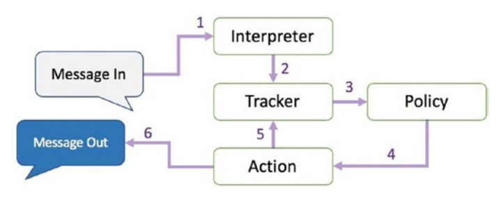
1.1. Policies
Der Assistent benützt Policies um zu entscheiden, welche Action als nächstes ausgeführt werden soll. Es gibt machine-learning und rule-based policies.
Hierbei kann man die Policies beispielsweise ändern. Dies macht man in der config.yml Datei.
Bei den Policies gibt es unterschiedliche Priorities, die dann zum Einsatz kommen, wenn mehrere Policies dieselbe Confidence vorhergesagt haben.
1.1.1. TED Policy
Die TED Policy steht für Transformer Embedding Dialogue Policy und wird meistens standardmäßig verwendet.
Bei jedem Dialog bekommt die TED Policy drei Informationen als Input. Die Message des Users, die vorherige Action die vorhergesagt wurde und Slots und aktive Forms. Dann werden diese in den Dialogue Transformer Encoder gepackt und anschließend werden sogenannte Dense Layer verwendet. Danach wird die Ähnlichkeit zwischen den System Actions und dem Dialogue Embedding berechnet und zum Schluss werden noch CRF Algorithmen verwendet, um Entities zu erkennen.
-
Rasa NLU
Rasa NLU hat grundsätzlich zwei Hauptaufgaben.
Zum einen wäre da die Intent Recognition und die Entity Recognition.
Die Intent Recognition, ist die Erkennung der Nutzer-Absichten. Dazu muss die NLU mit ausreichend Utterances, also Responses trainiert werden. Dabei gibt die NLU alle zugehörigen Intents geordnet nach dem Confidence Score zurück. Rasa verfügt demnach über ein Multi Intent Matching.
Außerdem gibt es noch die Entity Recognition, die dafür zuständig ist Entities, also wichtige Informationen, aus natürlicher Sprache zu extrahieren.
Der Aufbau der NLU ist vollständig konfigurierbar mithilfe der sogenannten Pipeline.
2. NLU Pipeline
Rasa Open Source bietet bei der Initialisierung des Projekts eine Standard-NLU-Konfiguration.
In Rasa Open Source werden eingehende Nachrichten von einer Reihe von Komponenten verarbeitet. Diese Komponenten werden nacheinander in einer sogenannten Processing Pipeline ausgeführt, die im config.yml File definiert ist. Wenn man eine NLU-Pipeline auswählt, kann man allerdings sein Model anpassen und an das Dataset verfeinern.
Auf diesem Bild sind alle Komponenten und der Lifecycle zu sehen:
Bevor die erste Komponente mit der Create-Funktion erstellt wird, wird ein sogenannter Kontext erstellt (der nichts anderes als ein Python-dict ist). Dieser Kontext wird verwendet, um Informationen zwischen den Komponenten zu übergeben. Beispielsweise kann eine Komponente Merkmalsvektoren für die Trainingsdaten berechnen, diese im Kontext speichern und eine andere Komponente kann diese Merkmalsvektoren aus dem Kontext abrufen und eine Intent Klassifikation durchführen.
Zunächst wird der Kontext mit allen Konfigurationswerten gefüllt, die Pfeile im Bild zeigen die Aufrufreihenfolge und visualisieren den Pfad des übergebenen Kontexts. Nachdem alle Komponenten trainiert und beibehalten wurden, wird das finale context dictionary verwendet, um die Metadaten des Models beizubehalten.
2.1. Arten von NLU Pipelines
Es gibt verschiedene bereits konfigurierte Pipelines.
Grundsätzlich ist zwischen Pipelines zu unterscheiden, indem man sich informiert, ob sie pre-trained word vectors verwenden oder nicht.
2.1.1. Beispiele für Pipelines mit pre-trained word vectors
Der Vorteil von Pipelines, die pre-trained word vectors verwendet ist, dass diese bereits aus der jeweiligen Sprache word vectors besitzen. Somit weiß das Model beispielsweise, dass Äpfel und Birnen ähnlich sind ohne, dass dies in den Intents irgendwo spezifiert werden muss.
language: "de"
pipeline: "spacy_sklearn"Die SpaCy Pipeline verwendet pre-trained word vectors von GloVe oder fastText.
Es gibt außerdem auch noch Pipelines von MITIE. Diese verwendet MITIE als Source für die word vectors. Ein Vorteil von MITIE ist, dass man hier auch seine eigenen word vectors trainieren kann, indem man einen Corpus von Wikipedia oder ähnlichen Seiten verwendet. Allerdings wird MITIE meistens nicht empfohlen und es könnte auch sein, dass MITIE demnächstet deprecated sein wird.
language: "de"
pipeline: "mitie_sklearn"2.1.2. Beispiele für Pipelines ohne pre-trained word vectors
Der Vorteil von Pipelines ohne pre-trained word vectors ist, dass diese speziell auf den Fachbereich angepasst sind, für den man den Chatbot entwickelt.
Als Beispiel kann man die Wörter "balance" und "symmetry" aus dem Englischen sehen. Diese Wörter sind eng miteinander verwandt. Allerdings kann im Kontext von Banken das Wort "balance" auch mit "cash" verwandt sein. Bei einem pre-trained Model würden diese Wortvektoren nicht nah aneinander liegen, aber wenn man einen Chatbot hat der nur Intents besitzt, die mit Banken und Rechnungswesen zu tun haben, werden diese zwei Wörter "balance" und "cash" ohne pre-trained word vectors als ähnlich erkannt werden.
Außerdem benutzen diese Pipelines kein sprach-spezifisches Model und somit kann man sie in allen Sprachen verwenden, die tokenisiert werden kann.
language: "de"
pipeline: "tensorflow_embedding"Der Bag-of-word-vectors Ansatz ist zwar sehr gut aber leider auch nicht perfekt. Ein Problem davon ist, dass er oftmals keine fachspezifischen Begriffe kennt und außerdem können Typos nicht als Wortvektoren gelernt werden. Außerdem ist das Problem bei pre-trained word vectors, dass zehntausende Vektoren gespeichert werden, die vermutlich nie verwendet werden.
Mit dem Tensorflow-Embedding macht man im Grunde genommen genau das Gegenteil. Diese Pipeline verwendet keine pre-trained vectors und sollte mit jeder Sprache verwendet werden können. Diese Pipeline lernt Embeddings für die Intents und für die Wörter und die Embeddings werden verwendet um die Ähnlichkeit zwischen dem Input und den Intents zu ermitteln.
Alle Komponenten der Pipeline können hier eingesehen werden:
2.2. DIETClassifier
DIET steht für "Dual Intent and Entity Transformer" der Name ist schon relativ vielsagend, DIET kann Intents klassifizieren und Entities erkennen.
Was bedeutet eigentlich Klassifizieren und was macht ein "Classifier" überhaupt?
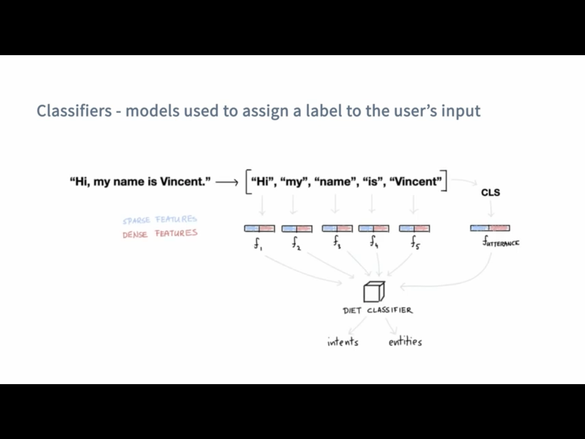
Ein Classifier nimmt den User Input und findet den passenden Intent aus unserem NLU.yml file dazu, ohne DIET würde man noch einen Entity Extractor brauchen, der aus dem Input Entities extrahiert jedoch kann DIET dies auch.
In dem Beispiel vom Bild oben würden wir dank DIET wissen wie der Intent lautet und das der Name Vincet
2.3. FallbackClassifier
Den FallbackClassifier verwendet man um mit Nachrichten umzugehen, bei denen nur eine sehr niedrige Confidence vorhergesagt wurde. In diesem Fall wird dann ein Intent mit dem Namen nlu_fallback vorhergesagt, welchen man dann behandeln kann und beispielsweise als Antwort immer definiert, dass der User seine Nachricht neu formulieren soll.
Die Confidence wird hierbei auf den Wert gesetzt welcher im Threshold angegeben wird.
pipeline:
- name: FallbackClassifier
threshold: 0.72.5. Policy
Eine Policy sind die Techniken die beachtet werden wie der Bot dem User antwortet.
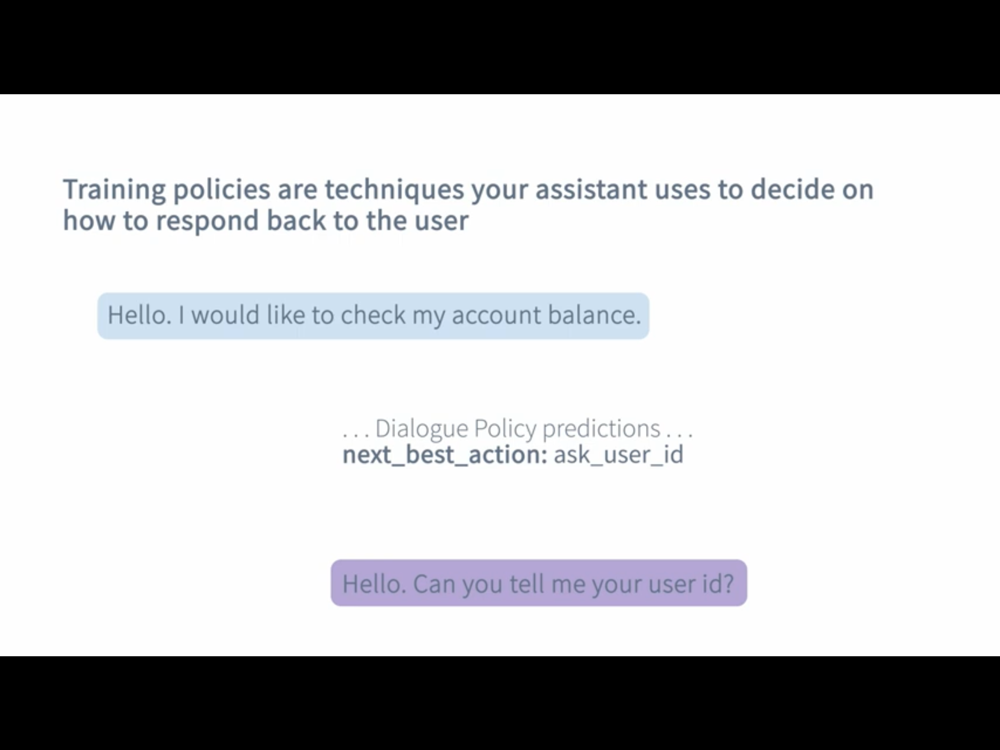
Falls mehrere policies eine Antwort mit derselben Genauigkeit hätten, wird nach der Priorität die Antwort gewählt:
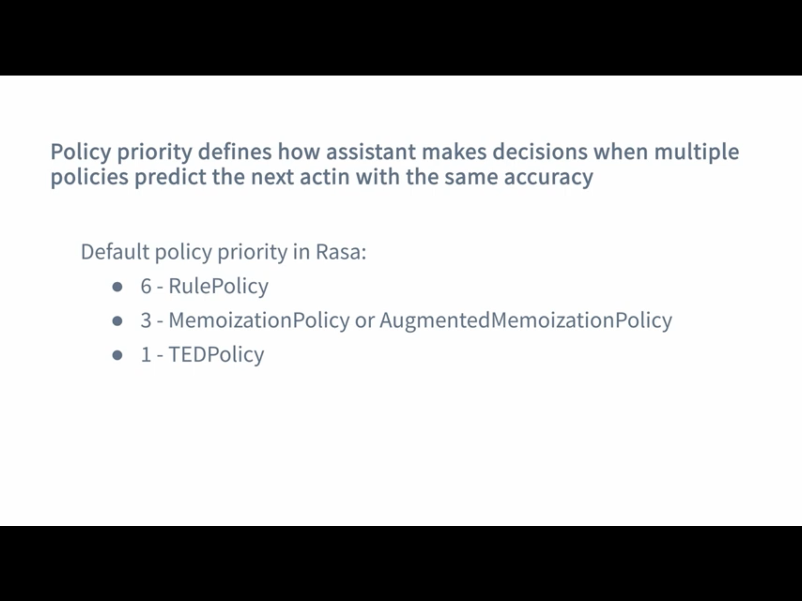
2.6. Comparing NLU Pipelines
You can compare two NLU pipelines by using this command
rasa test nlu --nlu data/nlu.yml --config config_1.yml config_2.ymlThere are two parts:
-
Training
This module allows you to train models on your own data. Having your own data to train allows you to develop a NLU that is business specific.
-
Server
This module serves as the training model to the chatbot. It can be hosted as an API service and runs at the back end.
The message is basically handled at two stages: one at the Core module, which manages the conversation, and one at the NLU module, which provides the essential language services.
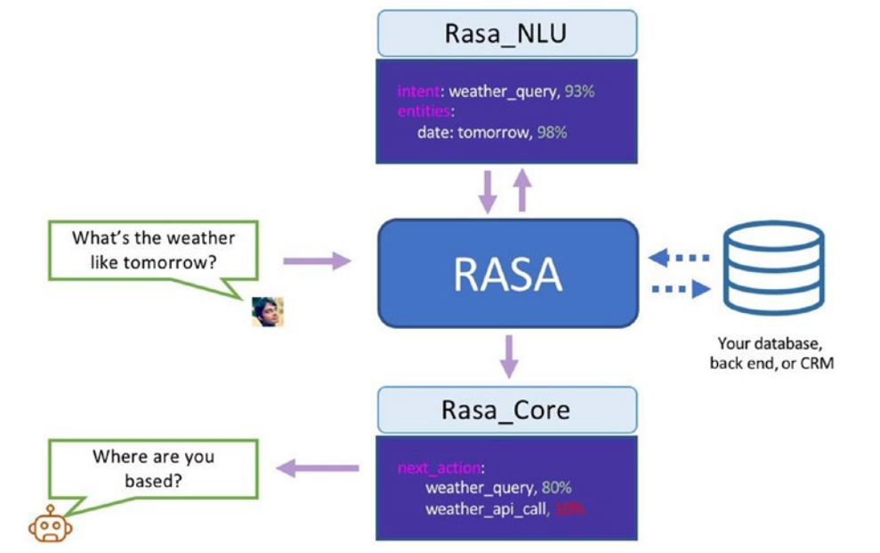
Singh, Abhishek, Ramasubramanian, Karthik, Shivam, Shrey: Building an Enterprise Chatbot Work with Protected Enterprise Data Using Open Source Frameworks ISBN: 978-1-4842-5034-1
3. Installation
-
Create your directory
-
Install Python
-
Create a virtual environment (optional but recommended)
-
Install Rasa Open Source
sudo apt update
sudo apt install python3-dev python3-pip python3-venvCreate a virtual environment (optional but recommended)
python3 -m venv ./venv
source ./venv/bin/activateInstall Rasa Open Source
pip3 install -U pip
pip3 install rasaUm nun zu festzustellen, ob Rasa installiert ist kann man zum Beispiel --version nutzen um die installierten Version von Rasa, Rasa SDK, Rasa X und Python zu sehen.
rasa --help
rasa --version
# zum Beispiel
Rasa Version : 2.8.3
Minimum Compatible Version: 2.8.0
Rasa SDK Version : 2.8.1
Rasa X Version : 0.39.3
Python Version : 3.8.8
Operating System : Linux-5.11.0-36-generic-x86_64-with-glibc2.10
Python Path : /home/lukas/anaconda3/bin/python3.1. Additional Dependencies
Man kann bei Rasa auch andere Machine Learning Algorithmen, wie spaCy oder MITIE verwenden. Um diese zu installieren, verwendet man folgende Befehle:
-
SpaCy
pip3 install rasa[spacy]
python3 -m spacy download de_core_web_md-
MITIE
pip3 install git+https://github.com/mit-nlp/MITIE.git
pip3 install rasa[mitie]Oder um alle Dependencies zu installieren kann man auch optional folgenden Befehl verwenden:
pip3 install rasa[full]3.2. Conda
Conda ist ein Open-Source-Paketmanager der sowohl auf Windows, macOS und Linux läuft. Außerdem ist Conda auch ein environment manager mit dem man leicht environments erzeugen und wechseln kann, wenn man beispielsweise für eine bestimmte Anwendung eine andere Version eines Packages braucht.
In diesem Fall wurde Conda verwendet, da es beim Trainieren von Rasa Probleme und folgende Fehlermeldung beim Starten gab und ein möglicher Lösungsansatz dafür ist, dass man statt pip Conda verwendet.
...
AttributeError: module ‘tensorflow.python.keras.engine.training’ has no attribute ‘enable_multi_worker’3.2.1. Installation
Falls man nach der Installation von Conda immer noch folgende Fehlermeldung bekommt, muss man noch Conda zum Path hinzufügen.
conda: command not foundDies macht man folgendermaßen:
export PATH="/home/username/anaconda3/bin/:$PATH"3.2.2. Environment erstellen
Um ein Environment zu erstellen, müssen folgende Befehle ausgeführt werden:
conda create --name rasa_env python=3.7
conda activate rasa_envAnschließend müssen Rasa und alle gewünschten Packages installiert werden.
Zum Beispiel Rasa X mit dem folgendem Befehl:
pip install --use-deprecated=legacy-resolver rasa-x --extra-index-url https://pypi.rasa.com/simpleIn diesem Fall wird die alte Logik von pip verwendet, da die Installation mit pip 21 stecken bleibt.
4. Create the project
-
To initalize to project you need to run
rasa init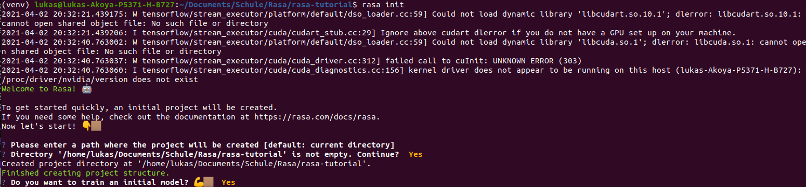
You can also use Docker for this. The only difference with this is that you’ll be running Rasa inside a Docker container.
docker run -v $(pwd):/app rasa/rasa:2.8.0-full init --no-prompt-
After that you can open the project in your preferred IDE.
-
To start a server with your trained model you use
rasa run5. Train your bot
5.1. Add new intents
Intents are stored in the data/nlu.md file.
The syntax to create a new intent is as following:
## intent:<intent name>
- <phrase 1>
- <phrase 2>
- <phrase 3>If you’re using a newer version of Rasa you’ll have a nlu.yml file insead
- intent: <intent name>
examples: |
- <phrase 1>
- <phrase 2>
- <phrase 3>Now to identify these new intents you have to add them to the list found
in your domain.yml file.
intents:
- greet
- goodbye
- affirm
- deny
- mood_great
- mood_unhappy
- bot_challenge
- <your newly created intent>
...5.2. Add responses
To add responses the chatbot should give go to the domain.yml file.
The syntax for adding a new response looks like this:
responses:
utter_greet:
- text: "Hey! How are you?"
utter_<name of your response>:
- text: "<text>"
image: "<img link>"
...5.3. Create stories
To use your created intents and responses you have to define so-called
stories in your data/stories.yml file.
The syntax for markdown looks like this:
## <name of your story>
* <name of the intent that is triggered>
- <response that should be provided>And this is the syntax for yml files:
- story: <name of your story>
steps:
- intent: <name of the intent that is triggered>
- action: <response that should be provided>
- intent: <name of the intent that is triggered>
- action: <response that should be provided>
...5.4. Run your new stories
Um zu überprüfen ob alles richtig gemacht wurde kann man den Befehl validate nützen, welcher angibt ob es irgendwelche Fehler im Projekt gibt.
rasa data validateUm das neue Model zu nutzen muss man dieses zuerst neu trainieren. Dies ermöglicht es dem Model alle neuen Dinge, die wir gerade implementiert im data/stories.yml und domain.yml File zu lernen.
Um sein Model zu trainieren benützt man folgenden Befehl:
rasa trainUm alle Optionen und Flags für den Trainingscommand zu erfahren kann man sich --help zur Hilfe nehmen.
rasa train --helpDanach kann man den Server starten und eine neue Chat-Session starten, indem man den rasa shell nützt.
rasa shellNow you can start asking your bot your new defined questions. Keep in mind that the text doesn’t have to be exactly like you wrote it and that the assistant will still be able to recognize it even with a few differences.
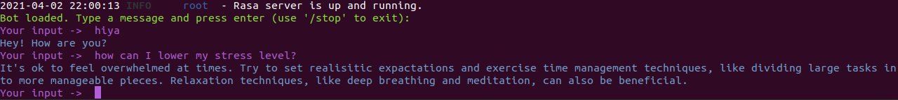
5.5. Andere CLI Befehle
Um eine interaktive Lernsession mit dem Bot zu starten, verwendet man den Befehl rasa interactive. Dabei wird einem in der Konsole ständig angezeigt, wie der Bot nun reagieren würde und man kann ihm direkt Feedback geben, ob die folgende Aktion richtig oder falsch ist.
rasa interactive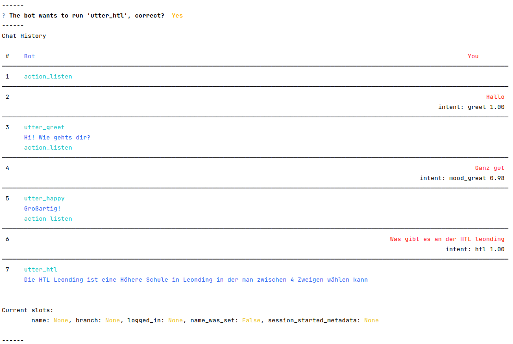
6. Komponenten
6.1. Intents
Intents sind die Absichten hinter der Nachricht des Benutzers. Als Intents werden also alle möglichen Beispielssätze definiert, die
ein Benutzer sagen könnte um eine bestimmte Absicht auszudrücken.
Intents werden in dem nlu.yml File wie folgt angegeben:
## intent:<intent name>
- <phrase 1>
- <phrase 2>
- <phrase 3>6.2. Responses
Responses sind die Antworten, die vom Bot gegeben werden, wenn ein bestimmter Intent erkannt wurde.
Responses fügt man in seinem domain.yml File wie folgt ein:
responses:
utter_greet:
- text: "Hey! How are you?"
utter_<name of your response>:
- text: "<text>"
image: "<img link>"
...6.3. Slots
Slots are the bot’s memory. They are key-value pairs and can be used to store information the user provided, similar to entities, like locations or information about the outside world.
In this example we are using slots for a form.
The syntax for creating a slot inside the domain.yml file is as follows:
slots:
slot_name: <slot name>
type: <type>6.4. Entities
Entities are structured pieces of information inside a user message like for example a location or a job or a name.
In your domain.yml file you write:
entities:
- <entity name>
- <entity name>Um die Entities in den Intents anzugeben, verwendet man folgende Syntax:
Hallo mein Name ist [Lukas](name).
Ich hätte gerne eine [große](size) [Pizza](meal)6.4.1. Entity Roles
Um die Entities in den Intents anzugeben, verwendet man folgende Syntax:
Entity Roles können sinnvoll in manchen Szenarien sein. Zum Beispiel bei folgendem Satz:Buche einen Flug von [Linz](city) nach [London](city).In diesem Fall sind sowohl Linz als auch London zwar richtig gekennzeichnet als city Entity, allerdings reicht
diese Information noch nicht aus, damit der Chatbot richtig reagieren kann.
Hierbei wäre es praktisch, wenn man noch angibt, welche dieser zwei Städte das Ziel und welche der Abflugsort ist.
Um die Entities in den Intents anzugeben, verwendet man folgende Syntax:
Dies macht man mit `Entity Roles`.6.4.2. Entity Groups
Entity Groups können genutzt werden, wenn man Entites miteinander gruppieren möchte.
Dies kann zum Beispiel hier sinnvoll sein:
Ich hätte gerne eine große [Pizza](meal) mit [Pilzen](topping) und eine [Salami](topping) [Pizza](meal).Bei der Gruppe muss hier erkannt werden, welche zwei Entites zusammen gehören:
Ich hätte gerne eine große [Pizza](meal) mit [Pilzen](topping) und eine [Salami](topping) [Pizza](meal).
Group 1: [Pizza](meal) [Pilzen](topping)
Group 2: [Salami](topping) [Pizza](meal)6.4.3. Nutzung von Entity Roles und Entity Groups
Um diese Features nutzen zu können muss in der Pipeline entweder der CRFEntityExtractor oder der DIETClassifier
verwendet werden, da diese als einzige Entity Extractors role und group labels erkennen können.
|
Man kann entweder ein Form verwenden oder eine Custom Action machen um Entity Roles und Entity Groups zu verwenden.
6.5. Actions
Es gibt 2 verschiedene Arten von Messages:
-
Static Messages: Diese sind unabhängig vom User Input und benötigen keinen Action Server
-
Dynamic Messages: Diese sind abhängig vom User Input und benötigen einen Action Server
Der Rasa Action Server führt sogenannte Custom Actions für einen Rasa Open Source Conversation assistent aus.
Wenn dein Assistant eine gewisse Custom Action vorhersagt, sendet der Rasa Server einen POST request an den Actionserver mit einer JSON Payload mit dem Namen der vorhergesagten Action, der Conversation ID, den Inhalten des Trackers und den Inhalten der Domain.
6.6. Forms
Um mehrere Informationen von einem Benutzer zu bekommen eignen sich Forms.
Um Forms zu verwenden, muss die RulePolicy in der Policy Konfiguration eingetragen sein.
|
Um ein Formular hinzuzufügen, muss man dies in der forms Section in dem domain.yml File angeben.
forms:
restaurant_form:
required_slots:
cuisine:
- type: from_entity
entity: cuisine
num_people:
- type: from_entity
entity: number6.7. Synonyms
Mithilfe von Synonymen kann man extrahierten Entities einen anderen Wert geben, als sie eigentlich vorher hatten, wenn diese
in der Bedeutung gleich sind. Wenn man also mit verschiedenen Wörtern dasselbe meint, kann man sich Synonyms zur Hilfe nehmen.
Ein Beispiel dafür wäre Folgendes:
nlu:
- synonym: credit
examples: |
- credit card account
- credit account
6.8. Rules
Rules werden angegeben um kleine Teile von Unterhaltungen anzugeben, die immer wieder gleich behandelt werden sollen.
Rules sollten allerdings nicht allzu häufig verwendet werden, weil man nie alle Konversationen vorhersagen kann.
Um Rules zu verwenden, muss die RulePolicy in der Policy Konfiguration eingetragen sein.
|
Um eine Rule zu verwenden, schreibt man folgendes in sein rules.yml File:
rules: - rule: Say `hello` whenever the user sends a message with intent `greet` steps: - intent: greet - action: utter_greet
7. Rasa Action Server
Es gibt 2 verschiedene Arten von Messages:
-
Static Messages: Diese sind unabhängig vom User Input und benötigen keinen Action Server
-
Dynamic Messages: Diese sind abhängig vom User Input und benötigen einen Action Server
Der Rasa Actionserver führt sogenannte Custom Actions für einen Rasa Open Source Conversation assistent aus.
Wenn dein Assistant eine gewisse Custom Action vorhersagt, sendet der Rasa Server einen POST request an den Actionserver mit einer JSON Payload mit dem Namen der vorhergesagten Action, der Conversation ID, den Inhalten des Trackers und den Inhalten der Domain.
7.1. Running the Rasa SDK Action Server
Es gibt zwei verschiedene Arten, um den Actionserver zu starten. Diese sind abhängig davon, ob man rasa installiert hat oder nicht.
Wenn man rasa installiert hat, kann man folgenden Befehl nützen:
rasa run actionsOder sonst sollte man folgenden Befehl benützen:
python -m rasa_sdk --actions actionsWe are now running two servers, one for Rasa Open Source and the Rasa Action Server.
8. Airtable
For the tutorial Rasa for Beginners on Udemy we used a template for an Airtable workspace.
You need to define three keys when working with Airtable.
The API_KEY which is obtained on your /account page.
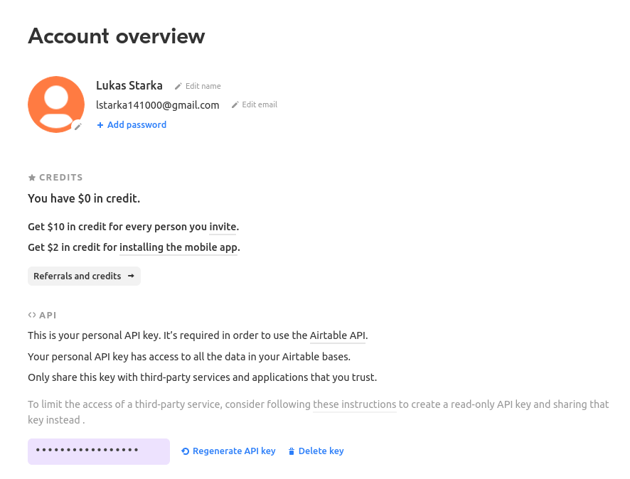
Your BASE_ID which you when you’re in your API Docs. And the
TABLE_NAME which you’ll also get there.

Now export your keys in a .env.sh and .env file.
Note that the TABLE_NAME uses HTML to encode the name and %20 is for the space character.
export AIRTABLE_API_KEY=key***
export BASE_ID=app***
export TABLE_NAME=Table%201To keep our credentials separate from other code we’ll use python-dotenv. You install it through:
pip install python-dotenvNow to run the action server you use:
rasa run actionsAnd in another terminal you start Rasa Open Source through:
rasa shellNow after you’ve taken part in the survey a new line in your Airtable will be inserted
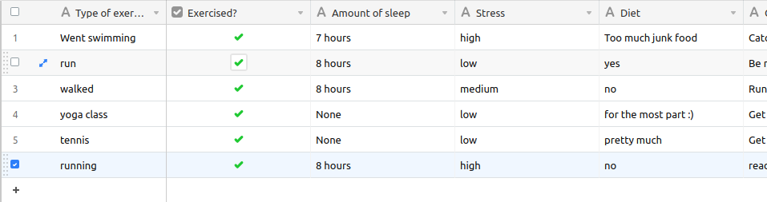
9. Twilio
9.1. Ngrok
To connect to Twilio we’ll have to use this tool, which simulates hosting a system to a server. It creates a tunnel URL.
To install Ngrok use:
sudo snap install ngrokAfter that connect Ngrok to your account through
ngrok auththoken <your token>Then you can use Ngrok to create a tunnel for you. In this case
we want it for the http port 5005.
Note that this URL is only temporary and you always have to restart it when you want to use it.
ngrok http 5005In the Rasa for beginners course we connect to Twilio, which provides developer-friendly APIs for text messages.
At first you have to register for an account.
In your credentials.yml file you can now save the data of Twilio.
twilio:
account_sid: "<your SID>"
auth_token: "<your token>"
twilio_number: "<your twilio number>"Now you need to restart Rasa through
rasa runAlso Ngrok should be running and you have to insert your URL into Twilio.
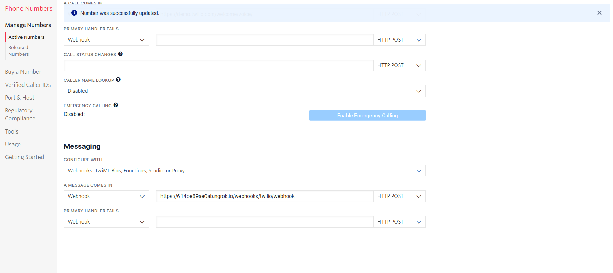
Now you can chat with your assistant via SMS.
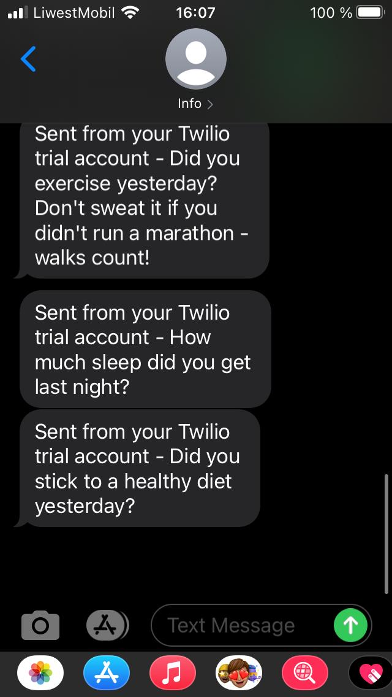
10. Conversation-Driven Development CDD
Conversation-Driven Development is the process of listening to your users and using those insights to improve your AI assistant.
The way we wrote phrases that the user might come up with doesn’t connect to the real world. People are different in the way that they phrase something based on their age, background and other factors.
Also there’s the "curse of knowledge" which means that we know our application well and we know how to phrase something in order to get the correct answer but other people don’t have that. So in other words we can’t imagine how an user who doesn’t know something might use the bot.
It is really important that you test your application with real world people even though it might feel uncomfortable at first.
There are 6 factors of CDD:
-
Share
-
Review
-
Annotate
-
Test
-
Track
-
Fix
11. Rasa X
-
Layers on top of Rasa Open Source and helps you build a better assistant
-
Can be deployed anywhere, so your training data stays secure and proprietary
-
Runs in the browser
-
Let’s you talk to your bot
-
Helps to correct model predictions
-
Share your application with test users
-
Review conversations
-
Annotate user messages
In the process of Deployment you expose your application to a
server rather than still using it locally.
11.1. Installation
Es gibt verschieden Arten, um Rasa X zu installieren.
11.1.1. Local Mode
Um Rasa X lokal zu installieren, verwendet man folgenden Befehl:
pip3 install rasa-x --extra-index-url https://pypi.rasa.com/simple11.1.2. Troubleshooting
Dies kann allerdings zu Problemen führen, bei denen die Installation stockt und nie beendet wird. Dies liegt daran, dass in pip 20.3 obenstehendes nicht funktioniert. Man kann also entweder eine ältere Version verwenden oder einstellen, dass noch die alte Logik verwenden sollte.
INFO: pip is looking at multiple versions of sniffio to determine which version is compatible with other requirements. This could take a while.Außerdem kann es immer noch zu Problemen mit den Versionen der verschiedenen Packages und Rasa X kommen. In folgenden Links werden Beispiele dafür und die Lösungen für diese Probleme geschildert.
Um Rasa X nun zu starten, verwendet man folgenden Befehl:
rasa xDieser öffnet einen Browser Tab unter der Adresse http://localhost:5002.
11.2. Production
In Rasa X kann man seinen Bot mit Gästebenutzern teilen, die dann mit dem Bot chatten können und so bei der Verbesserung einen wichtigen Teil beitragen können.
Dafür klickt man auf den Share-Button und gibt dann einen Namen und eine Beschreibung ein.
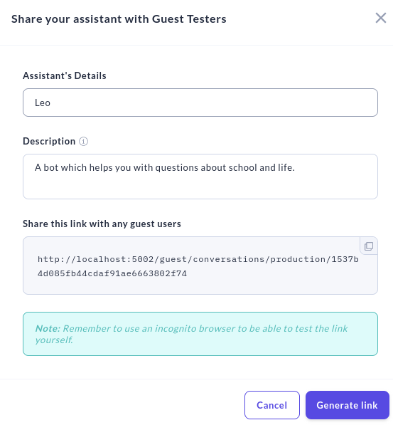
Dieser Link funktioniert allerdings nur lokal und verweist auf den localhost